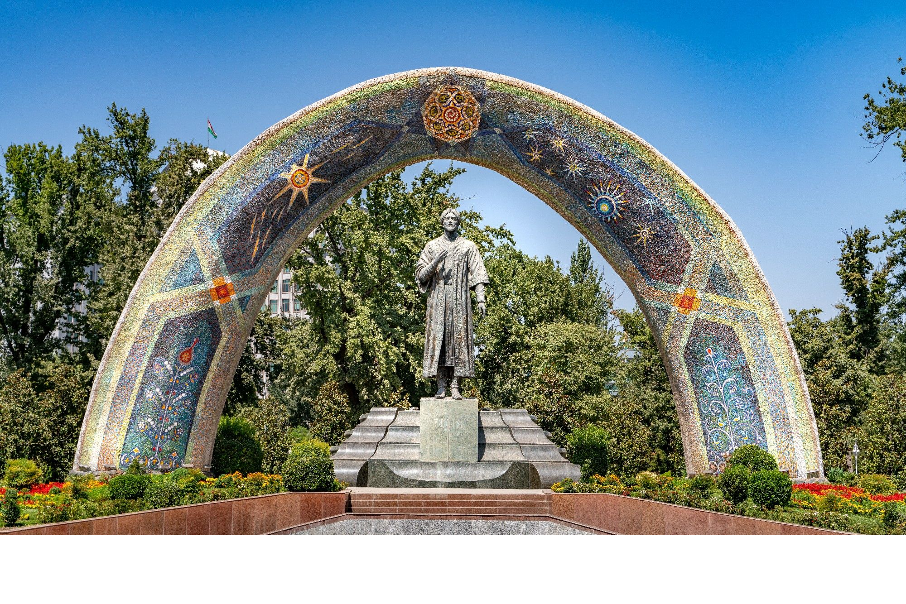

Абуабдулло Рудаки
Абуабдуллоҳ Ҷаъфар ибни Муҳаммад Рӯдакӣ тақрибан соли 858 милодӣ (баъзе манбаъҳо 859 ё 860-ро нишон
медиҳанд)
дар деҳаи Панҷрӯдак таваллуд шудааст. Ин деҳа дар наздикии Самарқанд, дар давлати Сомониён буд. Имрӯз он дар
ноҳияи Панҷакенти вилояти Суғди Тоҷикистон ҷойгир аст.
Тахаллусаш «Рӯдакӣ» аз номи зодгоҳаш гирифта шудааст.

Кӯдакӣ ва таҳсил
Тибқи ривоёт, ӯ дар оилаи деҳқон ба дунё омадааст.
Хотираи хеле қавӣ дошт. Мегӯянд, Қуръонро дар
синни тақрибан 8-солагӣ аз ёд кардааст.
Дар овони ҷавонӣ ба шеър ва мусиқӣ шавқ дошт
ва бо чанг менавохт.
Бо овози хуш ва истеъдоди шоирӣ дар Бухоро ба
дарбори Сомониён роҳ ёфт.
Ҷойҳои норавшан
Санаи дақиқи таваллуд ва тафсилоти кӯдакии ӯ дар манбаъҳои таърихӣ мустаҳкам нестанд. Ин ҳикояҳо асосан аз
ривоётанд. Масалан, афсонаи кӯр таваллуд шудани шоир аз ҷониби олимон шубҳанок ҳисобида мешавад. Бисёр
муҳаққиқон боварӣ доранд, ки ӯ дар пирӣ нобино шудааст.